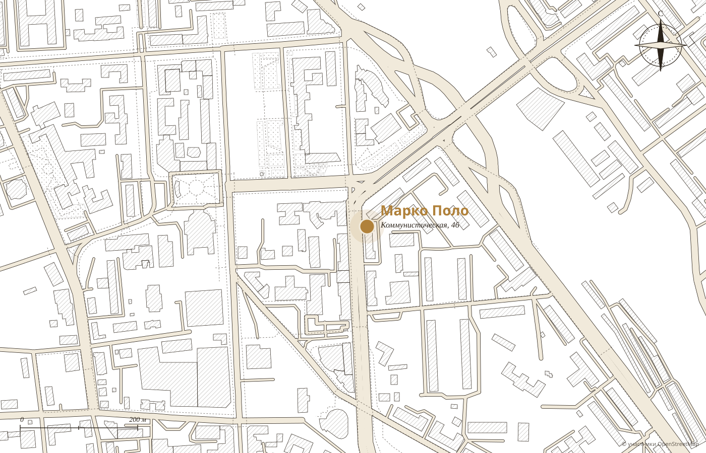

01
Верят на словоЗаказ по телефону без предоплаты. «Просто верят», удивляется гостья.
Демо-макет студии MERIDIAN · не является официальным сайтом заведения
Кофейня · Улан‑Удэ · Коммунистическая, 46
51°49′59″ с. ш.107°35′15″ в. д.
«Такое впечатление, что ты побывал в другой стране», пишут гости.
Каждый день с 8:00 до 23:00, завтраки до десяти вечера, в самом центре Улан‑Удэ.
каждый день с 8:00 до 23:00
Лучшая кофейня 2026 · семь премий 2ГИС с 2017 года · 4.9, 1008 оценок
Путевой журнал
Гости вспоминают, что пятнадцать лет назад снимали здесь свадебную фотосессию, а кофейня по-прежнему «не теряет свою марку». Каждая строка ниже взята из карточки 2ГИС.
Завтрак весь день


«Ходила сюда два дня на завтраки. Большое меню на любой вкус», пишет гостья, приехавшая в командировку. Цены подставляются из вашего меню.


Кухня
«Если морепродукты, то не две с половиной креветки в салате, а в достатке. Мясо, так знатный кусок», пишет гостья. Цезарь с сёмгой, тыквенный суп, ризотто, хрустящая свинина.

Зал
Интерьер здесь рассматривают, как в путешествии. Вот что гости отмечают чаще всего.
Что любят гости
Из отзывов гостей в 2ГИС. Наведите на слово или нажмите на него: покажем, как это выглядит.
Маленькие ритуалы
01
Верят на словоЗаказ по телефону без предоплаты. «Просто верят», удивляется гостья.

02
Как домаВстречают гостей так, будто знают их много лет, пишут в отзывах.
03
Честное менюНа каждой позиции калории, белки, жиры и углеводы.
04
Детский уголокДетское меню и свой уголок, пока взрослые завтракают.

Адрес и часы
Первый этаж, в самом центре Улан‑Удэ.
Для владельца
Гость видит «открыто сейчас» и сразу бронирует стол или звонит.
Как в зале: блюда, цены, калории, белки, жиры и углеводы.
История кофейни на одной странице, а не в ленте ВКонтакте.
Никаких персональных данных: политика конфиденциальности не нужна.